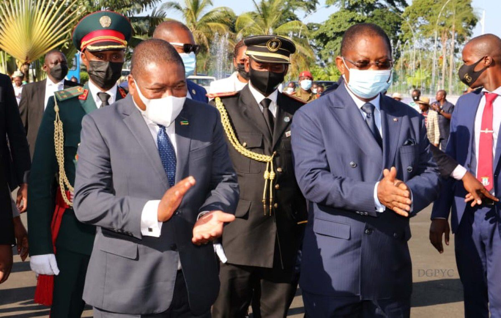
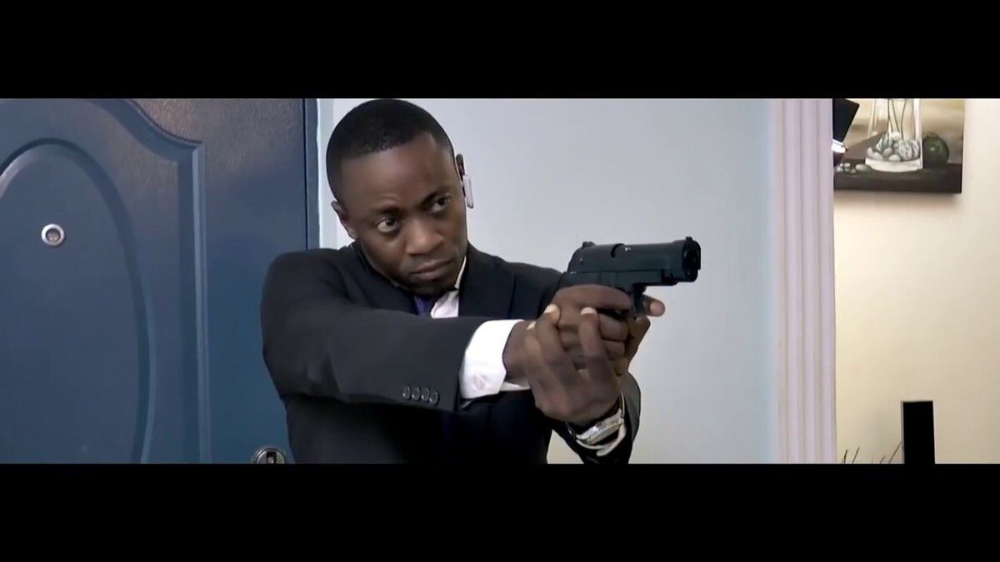
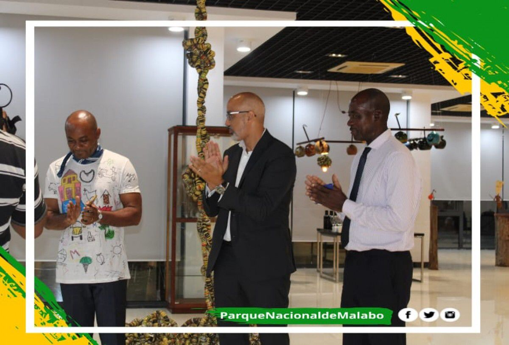

Президент Республики Мозамбик Е.П. Филипе Нюсси. Сегодня днем он прибыл в Малабо, и это его первый государственный визит. По прибытии он получил сердечные приветствия от премьер-министра правительства, отвечающего за административную координацию, Франсиско Паскуаля Обамы Асуэ, от имени и по поручению главы государства и правительства Его Превосходительства Обианг Нгема Мбасого.
В этот день за несколько минут до 16:00 президентский самолет, на борту которого находился глава государства Республики Мозамбик Е.П. Филипе Нюсси.
Премьер-министр возглавил приветственную процессию в сопровождении трех заместителей премьер-министра правительства, министров иностранных дел и национальной обороны, а также делегатов министров национальной безопасности и внутренних дел и местных корпораций; Также присутствовали губернатор провинции Биоко Норте, мэр городского совета Малабо и посол нашей страны, аккредитованный в Мозамбике.
После непродолжительного пребывания в зале почета и перед тем, как покинуть территорию аэропорта, президент Мозамбика ответил различным анимационным и традиционным танцевальным группам, которые пришли в президентский терминал, чтобы оказать ему теплый прием.
Текст и фото: Департамент прессы и коммуникаций Аппарата Премьер-министра
Информационно-пресс-служба Экваториальной Гвинеи
В минувшую пятницу, 20 мая, в королевстве Марокко начался VI Фестиваль латиноамериканского кино, организованный Институтом Сервантеса совместно с 14 испаноязычными дипломатическими представительствами, аккредитованными при администрации Рабата.
Посольство нашей страны уже во второй раз участвует с фильмом в этом латиноамериканском кинофестивале. В первый раз он сделал это с документальным фильмом El Secreto del Bosque, а на этот раз он сделал это с жемчужиной Экваториальной Гвинеи киноиндустрии нашей страны, фильмом Anu Ngan или La Guarida del Diablo, который был показан в эту субботу, в мае. 21. в Институте Сервантеса в Рабате.
Это совместная деятельность, направленная на распространение потенциала кастильского языка как языкового и культурного моста между этими странами и Марокко. Каждый год этот фестиваль призван показать марокканской публике в полной мере достижения киноиндустрии этих 14 латиноамериканских стран, аккредитованных в Рабате.
Текст: Дарио Мба Обианг Ангоно (пресс-атташе в Марокко)
Информационно-пресс-служба Экваториальной Гвинеи
Хосе Луис Мейе Обоно имел честь в минувшую субботу возобновить деятельность художественной галереи Национального парка, которая была лишена какой-либо деятельности в связи с прошлыми годами пандемии и строгим выполнением поручений правительства персоналом Национального парка, который , учитывая отсутствие мер доверия, начали приглашать этого молодого и многогранного артиста.
Монсюи Мейе представил ретроспективную коллекцию своей более чем 20-летней работы, в которой представлены скульптура и, прежде всего, живопись. Эта коллекция, состоящая из более чем 100 произведений искусства, не оставила равнодушными гостей на церемонии открытия, на которой были произнесены вступительная речь и благодарственное обращение Генерального директора музеев Хосуэ Эсоно Эду Корредора, представителя Министерства культуры и туризма. и продвижение ремесел. В своем выступлении генеральный директор указал на важность популяризации национального искусства для отдела и лично поблагодарил Монсуи за его работу, которая, как он надеется, вдохновит других молодых людей, имеющих продуктивную отдушину в искусстве для выражения своих желаний и мыслей. .
На мероприятии присутствовали представители власти, дипломаты и известные личности, которые не только смогли насладиться живыми объяснениями автора некоторых работ, но и смогли поговорить с ним о них.
Без сомнения, аккуратный художник по-прежнему будет ярким примером способностей, которыми обладает Экваториальная Гвинея в художественных вопросах, будучи в состоянии отобразить большую часть нашей культуры и самобытности руками наших авторов; то обстоятельство, что все те, кто проедет через Малабо в течение следующих четырех месяцев, смогут убедиться, время, которое галерея парка дала для подготовки следующей выставки.
